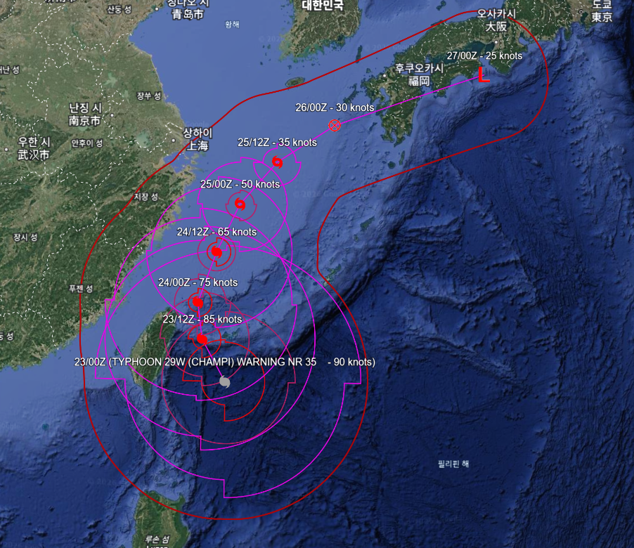
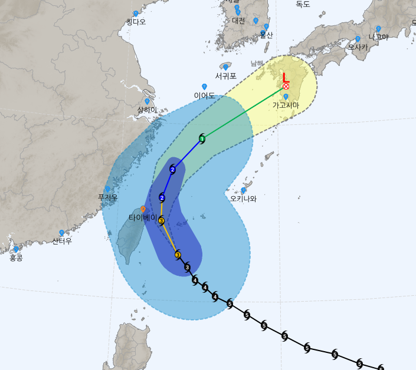
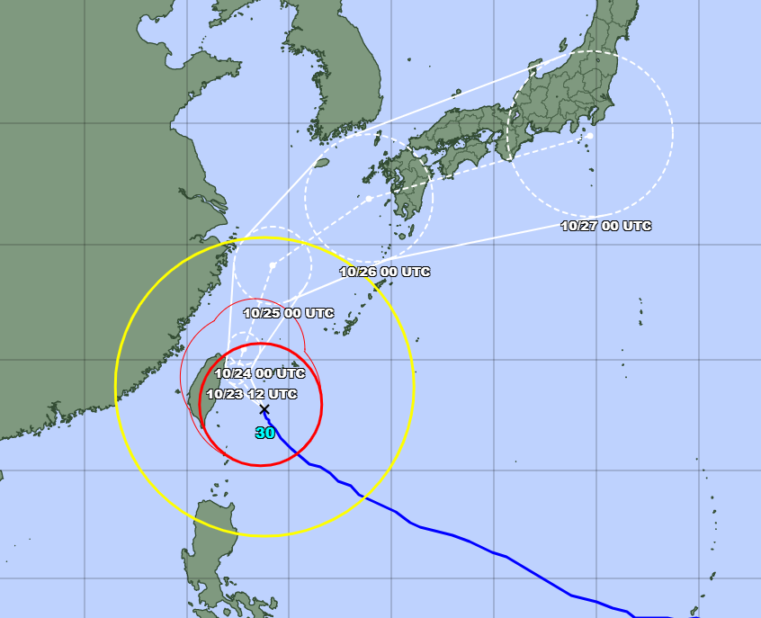
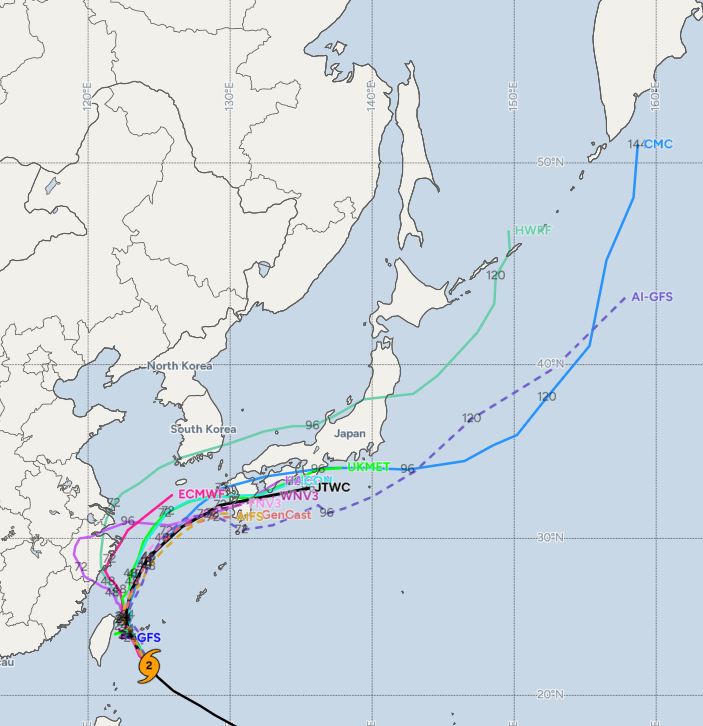

일본 규슈(구마모토 부근)에 상륙하는 것은 거의 확실시 됨.
이틀 전까지 한국 방향으로 경로 잡았던 일본 기상청도 경로 수정함
다만 미국 예보 기준으로는 상륙 직전 열대저기압으로 약화한 뒤 곧바로 온대저기압으로 변질되면서 상륙 무렵엔 태풍 상태가 아닐 가능성을 더 높게 보고 있음
물론 태풍이 아니라고 해서 폭풍과 비바람이 갑자기 뿅 하고 사라지는건 아니고 더 지랄맞은 날씨로 변하게 됨
그리고 대만 부근에서 태풍 이동속도가 느려지면서 25~26일 무렵이 우리나라 남해상 영향권으로 영향시간대가 하루 정도 뒤로 밀림

이번 참피 예상 경로 변화 추이를 보면 인공지능 모델들이 전반적으로 우세한 것으로 생각됨. 다만 일본 상륙 이후 이동 속도 차이가 매우 심해서 120시간 예보 기준으로도 오사카 남쪽에서 캄차카 반도 남쪽에 이르는 경로범위 오차가 보임. 특히 CMC는 갑자기 급발진해서 AI-GFS보다 더 심한 풀악셀을 예상중
이미 사망자 나왔더만.... 괌도 쓸어버려서 아마 이번 지나고 나면 제명될거 같음